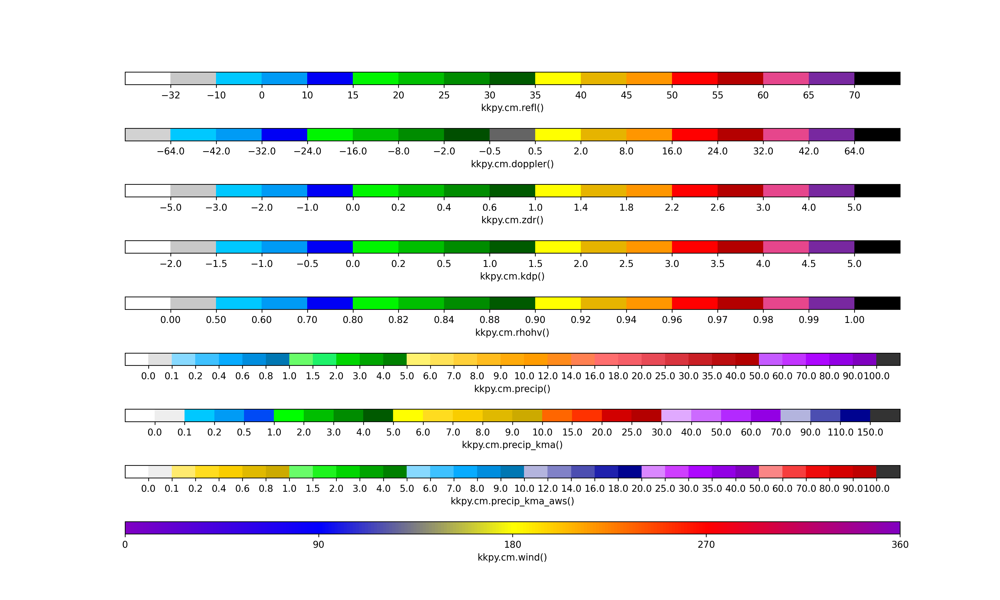

Note
Click here to download the full example code or to run this example in your browser via Binder
Plotting Colormaps¶
Show all colormaps in kkpy
8 9 10 11 12 13 14 15 16 17 18 19 20 21 22 23 24 25 26 27 28 29 30 31 32 33 34 35 36 37 38 39 40 41 42 43 | import kkpy
import matplotlib as mpl
import matplotlib.pyplot as plt
import inspect
# Get all available cmaps
def available_functions(module):
func_list_with_underscore = [x.__name__ for x in module.__dict__.values() if inspect.isfunction(x)]
func_list = [x for x in func_list_with_underscore if not x.startswith('_')]
return func_list
cm_list = available_functions(kkpy.cm)
# Get labels for each cmap
labels = [f'kkpy.cm.{x}()' for x in cm_list]
# Draw cmaps
fig = plt.figure(figsize=(15,len(cm_list)), dpi=250)
gs = fig.add_gridspec(len(cm_list), 1, hspace=3.5)
for i_c, cm in enumerate(cm_list):
# for each cmap
cmap = getattr(kkpy.cm, cm)()
ax = plt.subplot(gs[i_c])
# cmap and norm are usually used in plt.pcolormesh()
# ticks can be used in plt.colorbar()
cb = mpl.colorbar.ColorbarBase(ax,
cmap=cmap['cmap'],
norm=cmap['norm'],
ticks=cmap['ticks'],
orientation='horizontal')
cb.set_label(labels[i_c])
plt.show()
|
Total running time of the script: ( 0 minutes 1.011 seconds)
Estimated memory usage: 10 MB